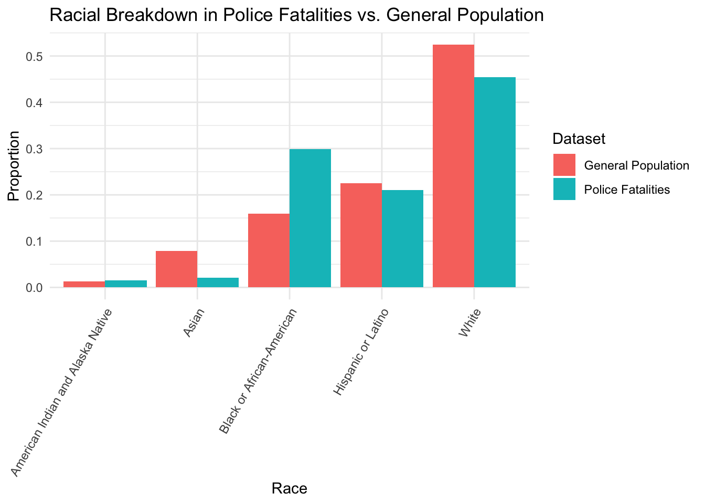
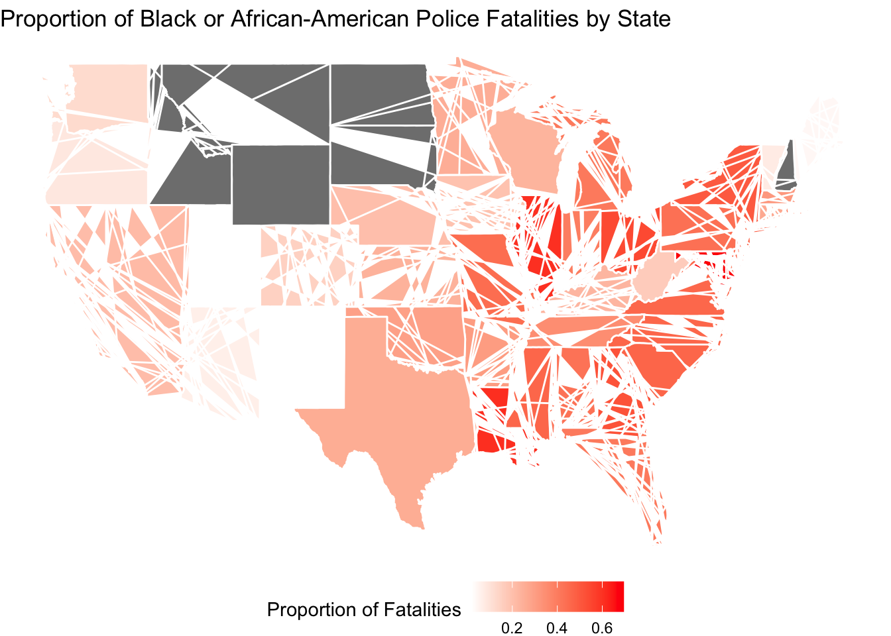

Big Picture
Introduction:
On a windy fall evening in Minneapolis, Minnesota in 2021, a community gathered, candles in hand, and their faces revealed their pain. They were not just mourning for a loss, but also protesting for a pattern. Among them was one old lady, who held a placard in hand that read, ‘Justice for Daunte.’ Daunte Wright, a 20-year-old young Black man, had been stopped and shot by the police during a traffic violation earlier this month. The officer involved resigned and was charged with second-degree manslaughter pending investigation, but to those gathered, this was a familiar end to a grievously familiar story.
Daunte’s story is not isolated. Across the United States, the tapestry of names, faces, and faded candles tells a similar tale. Data collected nationally reveals a stark reality: racial disparities pervade police-related fatalities, with Black individuals disproportionately represented. These are not just statistics; they are sons and daughters, friends and neighbors, whose stories demand a closer look.
This analysis aims to peel back the layers of data surrounding police-related fatalities to uncover how deeply race is intertwined with these fatal encounters. By examining the numbers, we seek to understand not only the scope of the disparities but also the human stories behind the statistics.
Racial Breakdown in Police Fatalities:
This bar chart provides a stark visual comparison between the racial composition of police-related fatalities and the general population. The proportional representation of different racial groups in fatal encounters with law enforcement is measured against their proportion in the general U.S. population. The bars in red represent the general population percentages, while the blue bars represent those of police fatalities.
From a glance, it is evident that certain groups appear more frequently in police fatality statistics than would be expected from their numbers in the general population. The discrepancy is particularly notable among Black or African-American individuals, whose representation in fatalities is substantially higher than in the population at large. This contrast suggests a troubling disparity that warrants a deeper investigation into the causes and conditions that lead to such a disproportionate impact.
Dissecting Disparities
The implications of this visualization are profound. They highlight a need to examine not only the interactions leading to these fatal outcomes but also the broader systemic issues at play. Such disparities may stem from a complex interplay of socioeconomic factors, biases within law enforcement, and the lived realities of racialized communities.
Understanding the ‘why’ behind these numbers is crucial. It beckons policymakers, social scientists, and community leaders to grapple with uncomfortable questions about equity, justice, and the role of policing in society. As we embark on this analytical journey, the data becomes more than just numbers; it becomes a narrative of lives affected and a roadmap for potential reform.
This plot serves as the opening chapter in our broader analysis, a quantifiable backdrop against which we’ll explore individual stories, regional specifics, and temporal shifts. It’s a visualization that doesn’t just inform but also challenges us to seek explanations and solutions for a more equitable future.
Mapping the Racial Divide Across the United States

In a revealing portrait of racial disparities, a new heat map of the United States uncovers the disproportionate representation of Black or African-American individuals in police fatalities across states. The visualization, borne out of recent comprehensive data analysis, brings to light the percentage of Black fatalities in relation to total police-involved deaths state by state, painting a picture of contrast that traverses the nation’s expanse.
The darkest shades on the map highlight regions with the highest percentages, pointing to a grim reality where the likelihood of police fatalities involving Black individuals far exceeds their population proportion. States like Illinois and Maryland emerge with a notably higher incidence, a reflection that compels introspection into the social and systemic underpinnings that perpetuate this national crisis.
The data-driven approach offers a clear indication of the underlying patterns of racial bias in law enforcement, raising questions about the factors driving such disparities. From the legislation corridors to community forums, the map fuels an ongoing debate on the urgent need for reform and accountability in policing methods. It not only serves as a tool for activists and policymakers to pinpoint areas for change but also acts as a stark reminder of the ongoing struggles against racial injustice that continue to divide communities across the country.
This heat map stands as a critical piece in the larger mosaic of racial dynamics within the United States, providing visual evidence that underscores the stark reality faced by the Black community. It beckons a call to action for a concerted effort to address and dismantle the systemic inequities that cast a long shadow over the promise of justice and equality for all.
Rubric: On this page
You will
- Title
- Your big picture page should have a creative/click-bait-y title/headline that provides a hint about your thesis.
- Clarity of Explanation
- You should have a clear thesis/goal for this page. What are you trying to show? Make sure that you explain your analysis in detail but don’t go into top much mathematics or statistics. The audience for this page is the general public (to the extent possible). Your thesis should be a statement, not a question.
- Each figure should be very polished and also not too complicated. There should be a clear interpretation of the figure so the figure has a clear purpose. Even something like a histogram can be difficult to interpret for non-experts.
- Creativity
- Do your best to make things interesting. Think of a story. Think of how each part of your analysis supports the previous part or provides a different perspective.
- This page should be self-contained.
Note: This page should have no code visible, i.e. use #| echo: FALSE.
Rubric: Other components
Interactive
You will also be required to make an interactive dashboard like this one.
Your Big Data page should include a link to an interactive dashboard. The dashboard should be created either using Shiny or FlexDashboard (or another tool with professor’s approval). This interactive component should in some way support your thesis from your big picture page. Good interactives often provide both high-level understanding of the data while allowing a user to investigate specific scenarios, observations, subgroups, etc.
- Quality and ease of use of the interactive components. Is it clear what can be explored using your interactive components? Does it enhance and reinforce your conclusions from the Big Picture? Plotly with default hover text will get no credit. Be creative!
Video Recording
Make a video recording (probably using Zoom) demonstrating your interactive components. You should provide a quick explanation of your data and demonstrate some of the conclusions from your EDA. This video should be no longer than 4 minutes. Include a link to your video (and password if needed) in your README.md file on your Github repository. You are not required to provide a link on the website. This can be presented by any subset of the team members.
Rest of the Site
Finally, here are important things to keep in mind for the rest of the site.
The main title of your page is informative. Each post has an author/description/informative title. All lab required posts are present. Each page (including the home page) has a nice featured image associated with it. Your about page is up to date and clean. You have removed the generic posts from the initial site template.